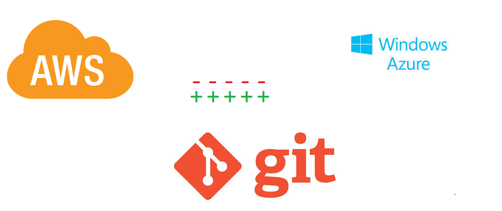
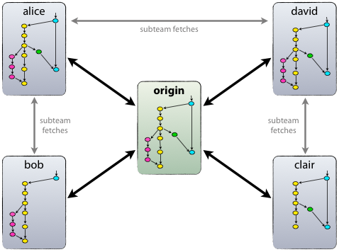
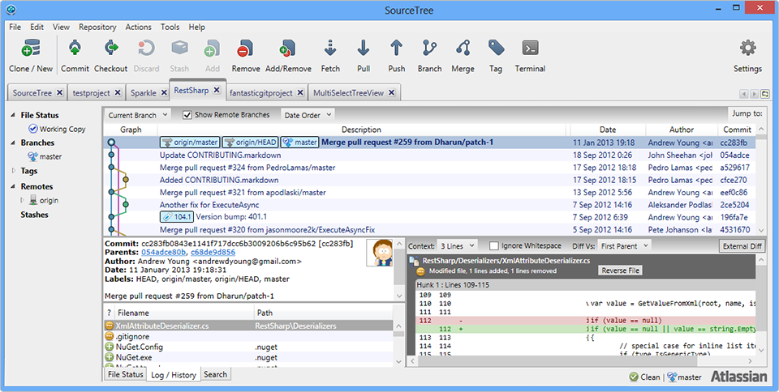
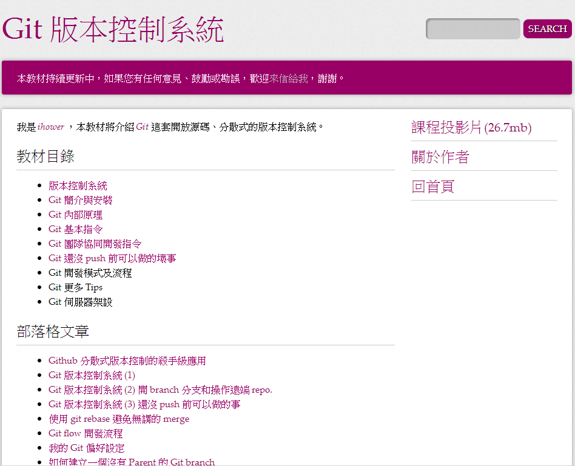

這篇文章主要是帶大家在雲端服務上建立一個Git Server，並透過一個範例簡單帶大家瞭解一下Git基本指令

Git 簡介
是目前最被大家推崇的版本管控工具，特色是利用分散發布的管理方式主要在乎檔案的整體性是否有改變，不強調需要到將檔案上傳到主機端管理，而是強調各分散管理的節點都能做好本身的檔案控管，並能靈活地交換各段節點的版本，以此來達成分散管理的好處。
與市面上市占率依舊頗高的SVN比較的整理如下:

以下來源至A Successful git branching model所提供的畫面節錄出成功的Git管控下各版本的樣貌:
Over view

Decentralized managed

Main branches

Merge without new feature

Hotfix branches

Git遠端的協議
- file://：
- 直接使用本機進行操作
- ssh://：
- 效率好、但不可匿名訪問、提供最佳的安全性
- git://：
- 速度最快的方式、但缺認證機制，適合僅讀取使用的情境
- http:// or https://：
- 最簡單的操作但速度是裡面最差的
Git基本指令
預設的Branch叫作master，而預設的Remote叫作Origin
- 取得Git版本
git --version
- 在當下目錄初始化儲存庫
git init
- 複製別人的Repository
git clone https://github.com/angular/material
- 檢視當下目錄的狀態
git status
- 新增檔案
git add
- 提交修改
git commit
- 更新檔案
git add -u filename
- 刪除檔案
git rm filename
- 重置檔案狀態
git reset HEAD
- 復原檔案變更
git checkout --
- 清除未追蹤的檔案
git clean
- 查看現在版本與最新版本的變更
git diff HEAD
- Log查詢
git log
Git Client安裝與工具
Git主體程式請至Git官網下載，除了使用cmd指令的方式來更新外，另外也有幾個不錯的工具介紹給大家
Git for Windows


除了強化傳統的Git BASH操作外，另外加上提供簡單的Git GUI操作畫面，輕量但高效率的傳輸是Windows使用者一定要安裝的套件
GitHub Windows 與 GitHub Mac


由 GitHub 官方開發的工具，提供給對 Git 沒有很了解的人用的，用簡潔與好上手的的 GUI 介面，對 Git 完全沒有概念的人來說較好上手。
SourceTree

是一套非常完整的Git GUI工具，整合完整的圖像表達與流程操作的方式，可以讓你對於整個專案的版本控管一目瞭然。所有的Git指令列功能都能夠過GUI 介面用滑鼠操作完成。
SourceTree與GitHub for windows的Git Shell 都是透過Git for Windows 工具進行版本操作，如果你沒有事先安裝 Git for Windows 的話這部分功能將無法使用，強烈建議先行安裝Git for Windows。
其他更多的GUI工具可以參考官方整理GUI Clients
GitHub 介紹

GitHub是一個共享雲端主機服務，提供一個線上的Git Server讓你可以免費使用(儘可建立公開專案)或是付費可建立非公開的私人專案，目前已有許多Open Source的專案轉至GitHub上讓大家共同撰寫與維護。

使用EC2建立Git Server
AWS EC2 簡介
AWS Elastic Compute Cloud簡稱為EC2，是Amazon一個提供雲端電腦的服務，它可以讓你去管理屬於你自己的主機並在上面做你平常對電腦做的任何事情，只是在主機架設在Amazon那邊放在雲端上使用。
使用Azure建立Git Server
Microsoft Azure 簡介
實戰Git
- git clone URL LOCAL # 取得程式碼
- git checkout -b BRANCH # 開個自己用的branch
修改你的程式碼或文件
- git add MODIFY-FILE # 將修改的程式碼加入要 commit 的範圍
- git status # 確認你要 commit 的東西是否正確
- git commit # 送出 commit
- git log # 看一下 log 是否程式碼已經成功 commit
References
這邊幫大家整理了一些好上手的學習資源
- Git 版本控制系統這提供了完整的Git教學與經驗分享，是新手上路老手挖寶的絕佳去處

- Learning Git Branching這是一個很酷的GitHub專案，目標再讓新手透過實作與動態展示的方式學習Git的各項指令與實際來解決問題，大家準備好來動手玩玩看了嗎?

另外提供兩個學習EC2與Azure的參考連結幫大家快速上手